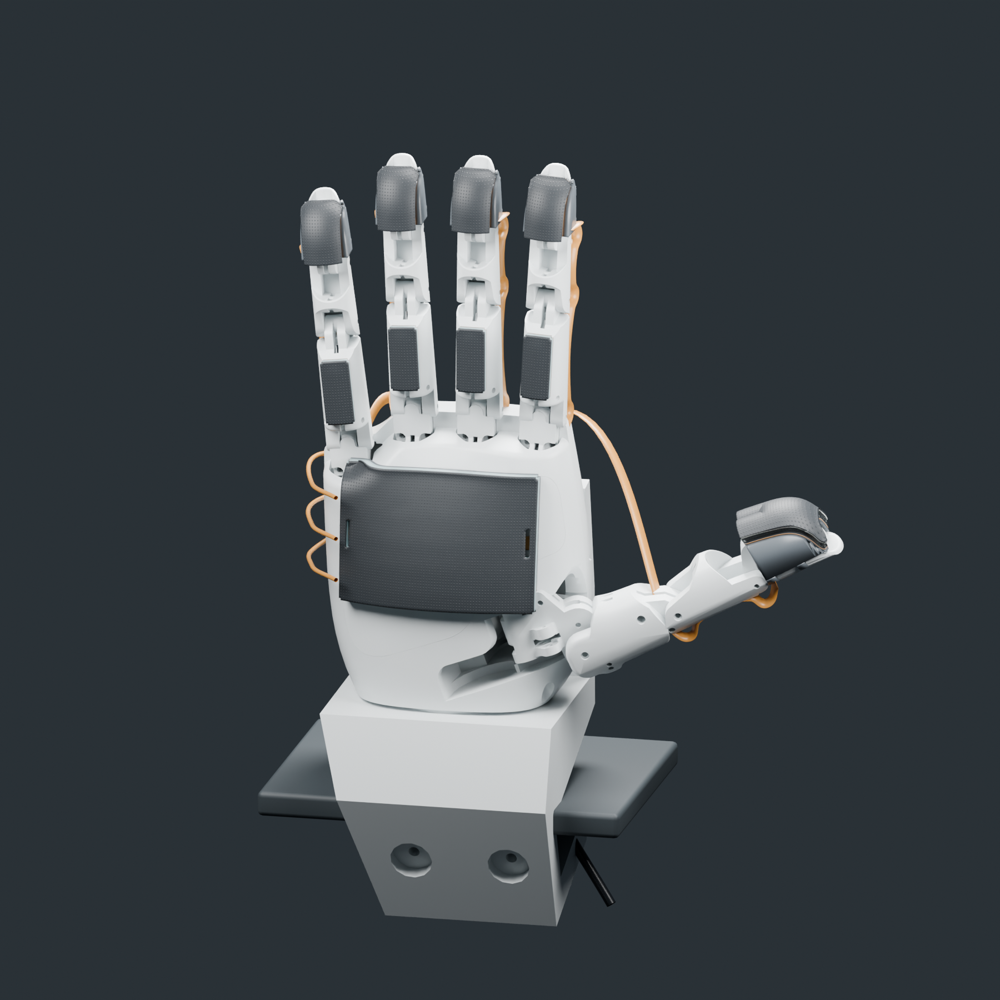
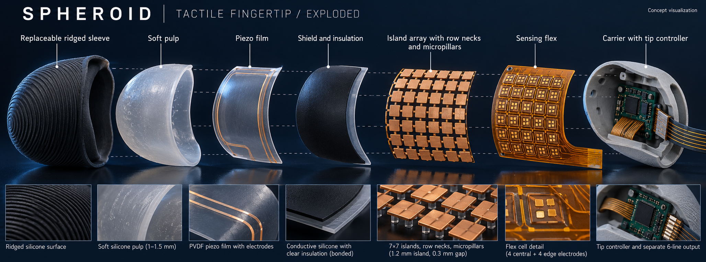
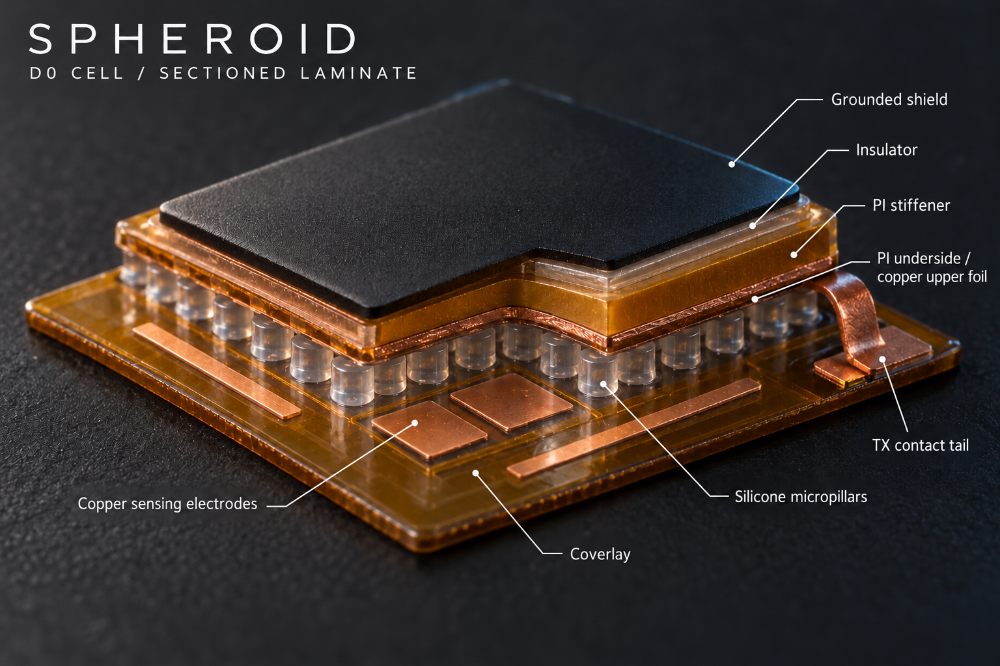
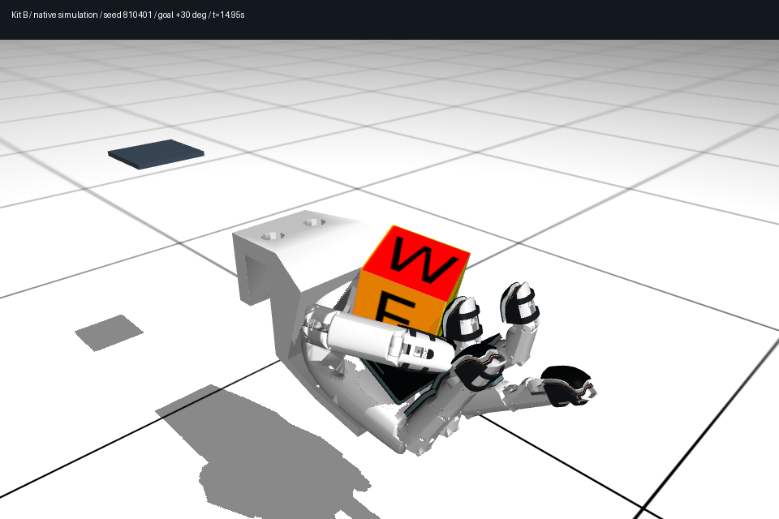
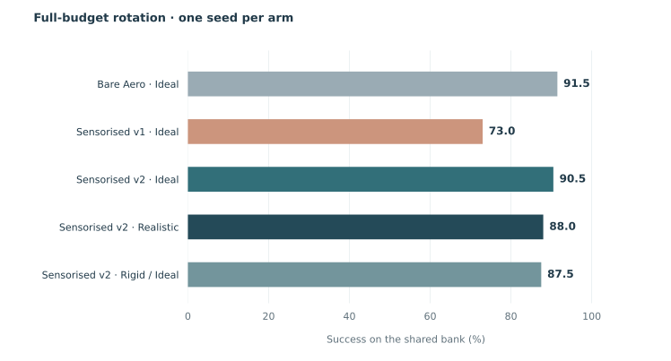
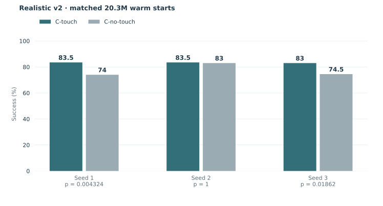
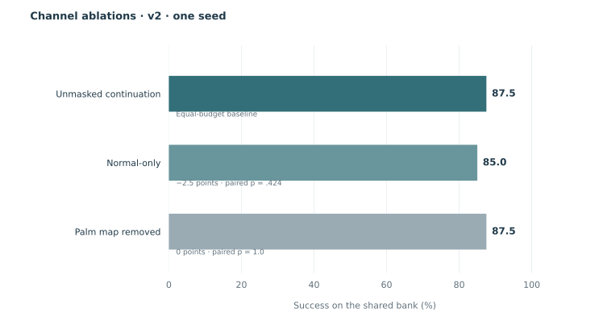
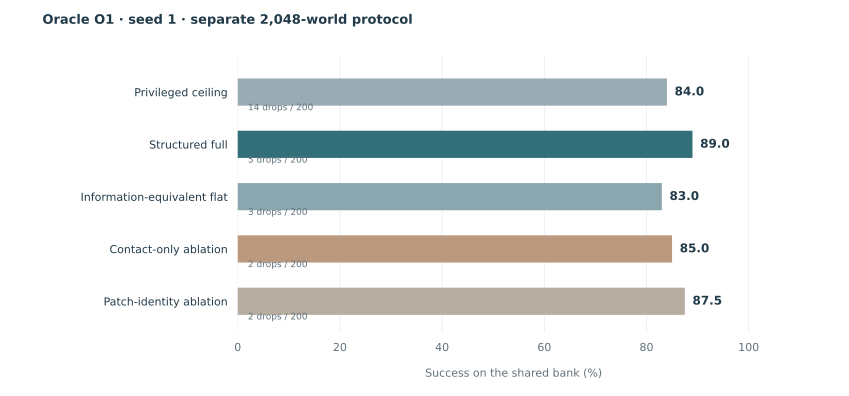
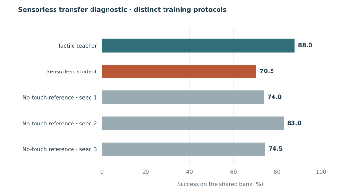

What is touching?
Element–patch relationships, forces, slip and events, with pose, velocity and physical hypothesis fields in the full DEXTUM state.
Research project · 20 October 2026 · v0.1.1
A representation of what touches, how it moves, and what comes next.
Tested with an oracle. Grounded in simulation. Designed for touch.
Spheroid · Peter Toth, Dan Oprisa, Sam Padilla
Aero hand · Physically specified sensing · Matched-start evaluation


The numbers below are simulation results.
No real-robot success rate is claimed.
Mean structured Oracle O1 success
89.0 / 90.0 / 88.5 · ceiling 84%, one seed · superiority unestablishedIdeal → Realistic sensing
90.5 → 88.0% · full-budget v2 · one seed · p = .383Recovered by correcting friction
Registered model check · p ≈ 3.3 × 10⁻⁶A fingertip touches a face, carries a load, or begins to slip. DEXTUM describes these relationships between canonical hand elements and object patches, alongside geometry, physical hypotheses and task state.
Element–patch relationships, forces, slip and events, with pose, velocity and physical hypothesis fields in the full DEXTUM state.
A bounded transition with an entry state, a controller and an exit condition. The hand-specific execution connector supplies the motor action.
A lattice records which transitions are feasible. A planner selects a path and checks the observed state at each handoff.
Conceptual diagram, not a recorded rollout. O1 tests the full-state representation on cube reorientation. Composition, learned perception, geometry transfer and transfer to another hand remain unestablished.
The oracle supplies simulator-derived fields. The structured and flat policies receive the same information, organised differently. A privileged full-state policy is the reference. This separates learning the inputs from learning control with them.
Read the O1 evidence ↓DEXTUM studies manipulation through contact states, physical hypotheses and reusable action quanta.
The first step is deliberately concrete: put a specified tactile kit on a simulated hand, train matched policies, remove signals, and measure what changes.
On cube rotation, realistic sensing performs well and normal force plus contact detection carries much of the available benefit. Whether richer touch is necessary belongs to the harder tasks now being built.
Geometry, cells,
contact and noise
Actual training path
and paired evaluators
Same hand, budget,
starts and evaluator
Channels, sensing
and representation
Hardware implications
only when supported
Sensor cells read contacts. They do not multiply the collision geometry. The accepted v2 model preserves the kit geometry and corrects the pads’ friction parameters.
sensor pads
Fingertips, proximal pads and palm
cell sites
Contact assignment to cell footprints
shared evaluation starts
Matched policy comparisons
sensor levels
Ideal, Realistic and Degraded
Two concept visualizations from the hardware design track. The 7 × 7 fingertip and D0 laminate shown here are design studies; the results below use the separately specified Kit B simulation with 40 cell sites.


The cell illustration exposes the proposed mechanical stack: sensing electrodes, silicone micropillars, insulation and shield.
The simulation asks what signals a policy needs. Bench measurements must then establish the force response, friction, noise and timing of the physical stack.
Concept imagery and the accepted simulation model serve different purposes. The benchmark’s sensor assumptions are listed below.
Simulation assumptions, not measured hardware tolerances. Acceptance thresholds await trained-noise tests on useful per-quantum policies.
Pad stiffness remains a 2 N/mm placeholder. Soft point contacts do not reproduce a conformal contact patch. Bench indentation and friction measurements remain essential.
Existing simulation media from the Aero and Kit B development archive. These recordings show the setup and behaviour; the current model-v2 benchmark results are reported in the next section.

rotation_joint_01, seed 810401, goal +30°. The recorded outcome is a timeout, with the object retained. Open PNG ↗The MP4 and PNG are reused unchanged from saved artifacts. The concept renders above are labelled separately.
No matching rendered video or full saved motion trajectory for the accepted v2 runs was found in the local archive (checked 20 October). Their evaluation records remain the source for the plots and success rates.
Replay metadata ↗Source files and SHA-256 hashes ↗The largest change came from a contact parameter. With that corrected, the sensing cost is small and the touch benefit depends on the training seed.


| Seed | C-touch | C-no-touch | Gain (points) | Paired p |
|---|---|---|---|---|
| 1 | 83.5% | 74.0% | +9.5 | 0.004 |
| 2 | 83.5% | 83.0% | +0.5 | 1.000 |
| 3 | 83.0% | 74.5% | +8.5 | 0.019 |

| Input | Success | Paired p vs unmasked |
|---|---|---|
| Unmasked | 87.5% | Reference |
| Normal-only | 85.0% | 0.424 |
| Palm map removed | 87.5% | 1.000 |
| Controller | Success | Drops /200 |
|---|---|---|
| C-touch · contact-space | 91.5% | 5 |
| C-no-touch · contact-space | 74.5% | 7 |
| Plain PPO · joint-space | 80.5% | 1 |
Arm labels verified against the original checkpoint hashes: source audit ↗. The 18 October prose draft had the two control labels reversed.
Bare-hand T1 subset, one seed: C-touch 77.85%, plain PPO 64.40%, C-no-touch 61.15%, averaged over ten physical conditions with 200 shared starts per condition. Reused starts are not independent replications; this is not object-geometry transfer.
The six-arm v2 C9 evaluation stopped at its repeatability gate on the first condition. No v2 transfer result is accepted.
On the earlier pad-friction model, touch gained 11.0 points across three seeds (95% interval +6.5 to +15.5). Dense skin scored 62.0% against 62.0% unmasked; stiffness and thickness changes did not recover performance. These are retained as v1 findings. They do not replace the v2 comparisons above.
The old 9-point warm-start sensor cost and 27.5-point apparent hand/protocol cost are not current-model headlines.
Oracle experiments remove perception learning: exact simulator-derived contact state and hypothesis fields are supplied. The question becomes what the representation preserves, and what its structure contributes.
The task: a cube in the Aero’s palm rotates ±30° in yaw, then maintains yaw error ≤10° and tilt ≤30° for two seconds. One object, one hand and one goal pattern. PPO learns the controller; the oracle supplies the input fields.
Pose and velocity remain in the full-state test. Contact-only is a separate ablation.
Information-equivalent flat control; contact-only and patch-identity ablations.
Within 5 points of the ceiling; at least 10 points above the flat control.

Structured success is 89.0 / 90.0 / 88.5% (mean 89.2%), against 84.0% from one privileged-ceiling seed. Every structured seed meets the registered within-five-points criterion. The seed-1 +5-point contrast has paired p = .0755; superiority is not established.
Significant against flat at seed 1, but below the registered +10-point bar. The threshold has not moved.
All three structured seeds are complete, with 5 / 7 / 5 drops. Flat seeds 1–2 score 83.0 / 85.5%, with 3 / 8 drops. Seed 2’s missing monitor is recovered and all 31 checks pass. Seed 3 remains pending; the three-seed structural verdict is incomplete.
A captured-model bug changed what the training path simulated. The protocol now qualifies the collection path and checks paired outcomes throughout training.
Contact trajectories can diverge under different compilations. We report the distribution of state discrepancies and paired outcome asymmetry rather than require trajectory identity.
Matched transitions through the final collection path and two direct compilations.
median ≤ min(10⁻², max(10⁻⁴, 10 × floor))Fresh-process next loss and state match. RNG, optimiser, environment and pending batch are retained.
Stop at per-check McNemar p < .01, |gap| > 15 points, or—after three checks—|mean gap| > 3 points with clustered p < .01.
Shared starts, final checkpoints, measured drops, run IDs, model versions and verified archives.
Reported policy scores use the faithful direct MJX evaluator with the randomized model supplied explicitly. Native MuJoCo provides separate physical-reference checks. The guard was revised during development; the revision history is part of the evidence. Repeated checks are an operational fault detector, not a claim of family-wise statistical error control. Deterministic analyses use reproducibility and boundary checks under the later registered ruling.

The long-term claim is a reusable description of manipulation across objects and hands. Rotation is the starting measurement, not proof of that whole claim.
Contact states, patch hypotheses, action quanta, feasibility lattices and planning.
A separately named contact-mode physical reference, with learned estimation and control.
A specified tactile stack, task-driven signal tests and a common episode format.
Registered next: O1b trains on single goals and tests held-out goals and untrained chains; O3′ tests held-out dimensions and object families; O5′ tests transfer to a LEAP connector. O1b inherits O1’s full inputs plus a six-value goal, with 16 seconds per goal and palm resets with training-only success-guided sampling. Its +10-point structural and +5-point interaction thresholds are fixed. Environment integration and GPU validation remain pending; these are not results.
One hand, one successful task family. No accepted touch-necessary task result yet. Sorting has an accepted mechanics gate; task success remains unmeasured. Hold needs an eligible bank; the switch has one settling re-gate.
Simulation only. Sensing quality, pad stiffness and friction need bench calibration. No physical kit performance, conformal contact fidelity or sim-to-real success is claimed.
Representations remain under test. No accepted O2–O5 composition, object-transfer or hand-agnosticism result. O1 is an oracle-input control experiment.
Architecture separation. Physical state and joules belong to the contact-mode physical reference and interfaces. No physical identities are assigned to Metriplector latent coordinates; no Metriplector implementation result is reported.
Download the reported values, number-to-report index, figures and this page. Research source, model-v2 XML/assets and registered configurations are available on GitHub. The paper PDF, policy checkpoints and complete portable training release remain pending.
GitHub repository ↗ Research code ↗ Model & sensors ↗ Scorecards ↗
| Result group | Run / source | Model / protocol |
|---|---|---|
| Friction and sensing | pass1_section20/c_touch_friction_idealpass1_section20/c_touch_realistic_v2 | v2 · 108.1M · 8,192 worlds |
| Touch recheck | Section 20 · recheck_analysis | v2 · three seeds · 20.3M warm starts |
| Channel ablations | workorder14_lane_d1_r04none / normal_only / palm, seed 1 | v2 · equal-budget 20.3M continuations |
| Oracle O1 | oracle_o1_workorder14_01O1 rotation registration 03 | v2 · 108.1M · 2,048 worlds |
| DAgger student | workorder14_lane_d2_r03 | v2 · 20,316,160 collected transitions |
| Claim | State | Next acceptance step |
|---|---|---|
| C11 · Oracle O1 | Three structured seeds; flat comparison pending | Flat seeds 1–2 accepted; flat 3 remains pending. The earlier guard-stopped seed 2 remains separate and unaccepted. |
| C7 · Sort / switch / hold | No accepted task result | Complete the task bank and guarded policy comparison. Switch and hold have no accepted task result. |
| C12 · Inferred touch | Measured negative · 41.5%, 10% drops | Seven original guards passed after final-monitor recovery. D2 is also negative at 70.5%. |
| C9 · Held-out physics | Repeatability stop; no accepted result | Repeated traces differ on the first condition for both arms. Records preserved; no gate waived. |
| E24 · Human-to-Aero tokens | Input-blocked | Validated human and Aero packet corpora missing. |
| E22 / E23 · Physical architecture | No accepted architecture result | E22 repeatability stopped before capture; E23 lacks admitted replay inputs. |
| E21 and stretch work | Outside this package | Future-touch head, dense-skin recheck, E25, MPPI hold and embodiment-anchor rehearsal are deferred. |
Frozen figures read explicitly admitted reports with hash checks. A new live checkpoint is never promoted automatically. Registered but unaccepted experiments remain labelled as unmeasured.
The figures read admitted reports with hash checks. The evidence index binds 29 displayed result rows to their run identities, model versions and source hashes. Reported scores use the faithful direct MJX evaluator; native MuJoCo provides separate reference checks.
Download the number-to-report index ↗
The paper and checkpoint distribution remain pending. The repository includes software/data licence scopes and third-party notices; source availability is not a claim of a new end-to-end GPU reproduction.
@misc{spheroid2026dextum,
title = {DEXTUM: Manipulation, Described Through Contact},
author = {Toth, Peter and Oprisa, Dan and Padilla, Sam},
year = {2026},
howpublished = {https://spheroid-ai.github.io/dextum/},
note = {Research snapshot v0.1.1; simulation results; paper pending}
}Page updated 20 October 2026 from accepted records through 18 October. The planned freeze is not presented as a completed release audit. Page structure inspired by the UVTA project page ↗. Concept renders, bench photography and historical simulation recordings are labelled separately.